L’indirizzo di network rimane invariato mentre i 16 bit
dell’indirizzo di host in questo caso sono stati “spezzati”
in due parti di 8 bit:
- la prima parte, cioè i primi 8 bit,
identifica una porzione della rete in questione (57);
- la seconda identifica il singolo host della sottorete (174).
Subnet Mask
La subnet mask è una sequenza di bit posti al valore 1 in corrispondenza dei bit dedicati al Network-ID e al Subnetwork-ID, mentre i bit che corrispondono all’Host-ID sono posti a 0.
Un esempio di subnetmask è il seguente:

A che cosa serve la subnet mask?
La subnet mask permette di ricavare immediatamente
l’indirizzo di rete da un indirizzo IP mediante un’opera-zione di AND
bit a bit tra l’indirizzo IP e la maschera stessa.Consideriamo per
esempio l’indirizzo IP di un host 10.40.80.3 con subnet mask 255.0.0.0.
1. Scriviamo i due valori in binario:
2. ed eseguiamo l’operazione di AND bit a bit:

3. Otteniamo 10.0.0.0, che è l’indirizzo della rete di classe A sul quale è collegato l’host.
 Indietro
Indietro